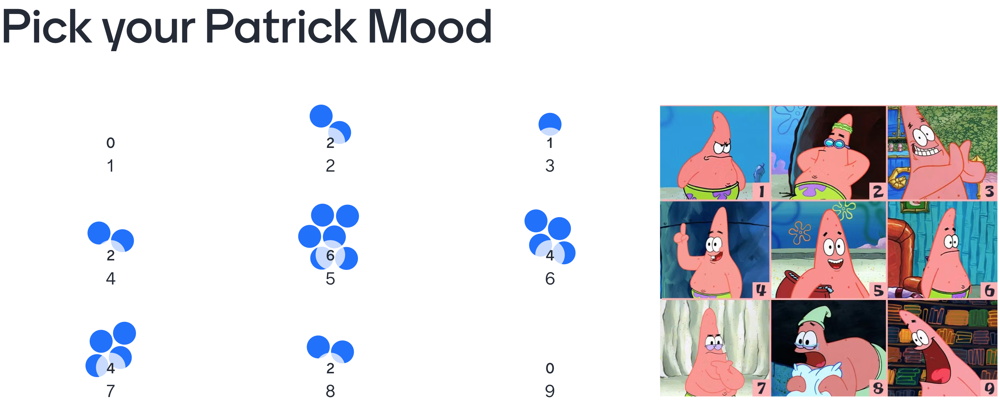

Lecture 1: August 7th, 2023#
Welcome to Math 10!#
Today:
Introductions and mood check-in
Syllabus read-through + what is specifications grading?
Canvas tour
Review of Python and NumPy
Typical Lecture Schedule:
12:00pm-1:00pm: Lecture Part 1
1:00pm-1:05pm: Scream into void break
1:05pm-1:50pm: Lecture Part 2

Results from our intro activity. Glad to see no angry faces :)
Introduction to Deepnote#
This is an example of a markdown cell. Markdown cells are used to write explanation for your code and format text nicely.
For example, if you are familiar with HTML, many things work exactly the same. For example:
This is an example of making a list.
Here is another list element To execute a cell, I can press
command+enter. To edit a cell, make sure it’s highlighted, and then press enter.
If you’re familiar with \(\LaTeX\), here’s how we can use it:
$\int_0^1 x^2 dx$gives the following output \(\int_0^1 x^2 dx\).
Here’s an example of how we can change text color:
Warning: Many commands work the same in Deepnote as in HTML and Jupyter notebook. However, there are a few differences. If you know how to do something in HTML or Jupyter and it’s not working in Deepnote, it’s probably a syntax difference.
Now, let’s look at some examples of code cells.
2 + 2
4
a = 3
b = 7
a + b
10
The next thing I want to emphasize is that the order in which we evaluate cells matters!
# This is an example of a comment
# Notice, there's no checkmark at the bottom of this cell
# It means I have no run this block of code
c = 3
# The following will give an error
# Note: for those new to python, ** gives exponentiation
c**3
27
c = 3
c**3
27
Review of Concepts from Python#
NumPy is one of the most important python libraries
Functionally, it is very similar to MATLAB
NumPy does not come with base python, we will need to import it every time we start a new notebook
The abbreviation np is a standard convention, and we will always use it in Math 10.
import numpy as np
Using NumPy, make a length-1000 array of random real numbers between 0 and 10.
# Instantiate a random number generator (rng) object
rng = np.random.default_rng()
To get random real numbers, we use the random method of rng.
#generates a random real number between 0 and 1
rng.random()
0.7766197372632885
rng.random(5)
array([0.77973784, 0.41434594, 0.51201003, 0.4163586 , 0.56463996])
rng.random(5).shape
(5,)
Recall, rng.random() returns random real numbers between 0 and 1. To get between 0 and 10, what could we do?
10*rng.random(10)
array([5.61130242, 4.35740703, 0.77731409, 9.62369627, 0.79242093,
3.37220759, 3.54490673, 2.47306276, 4.782707 , 9.52042868])
arr = 10*rng.random(1000)
Base python has a number of built-in functions, here are two examples:
len(arr)
1000
max(arr)
9.991973972379043
help(rng.integers)
Help on built-in function integers:
integers(...) method of numpy.random._generator.Generator instance
integers(low, high=None, size=None, dtype=np.int64, endpoint=False)
Return random integers from `low` (inclusive) to `high` (exclusive), or
if endpoint=True, `low` (inclusive) to `high` (inclusive). Replaces
`RandomState.randint` (with endpoint=False) and
`RandomState.random_integers` (with endpoint=True)
Return random integers from the "discrete uniform" distribution of
the specified dtype. If `high` is None (the default), then results are
from 0 to `low`.
Parameters
----------
low : int or array-like of ints
Lowest (signed) integers to be drawn from the distribution (unless
``high=None``, in which case this parameter is 0 and this value is
used for `high`).
high : int or array-like of ints, optional
If provided, one above the largest (signed) integer to be drawn
from the distribution (see above for behavior if ``high=None``).
If array-like, must contain integer values
size : int or tuple of ints, optional
Output shape. If the given shape is, e.g., ``(m, n, k)``, then
``m * n * k`` samples are drawn. Default is None, in which case a
single value is returned.
dtype : dtype, optional
Desired dtype of the result. Byteorder must be native.
The default value is np.int64.
endpoint : bool, optional
If true, sample from the interval [low, high] instead of the
default [low, high)
Defaults to False
Returns
-------
out : int or ndarray of ints
`size`-shaped array of random integers from the appropriate
distribution, or a single such random int if `size` not provided.
Notes
-----
When using broadcasting with uint64 dtypes, the maximum value (2**64)
cannot be represented as a standard integer type. The high array (or
low if high is None) must have object dtype, e.g., array([2**64]).
Examples
--------
>>> rng = np.random.default_rng()
>>> rng.integers(2, size=10)
array([1, 0, 0, 0, 1, 1, 0, 0, 1, 0]) # random
>>> rng.integers(1, size=10)
array([0, 0, 0, 0, 0, 0, 0, 0, 0, 0])
Generate a 2 x 4 array of ints between 0 and 4, inclusive:
>>> rng.integers(5, size=(2, 4))
array([[4, 0, 2, 1],
[3, 2, 2, 0]]) # random
Generate a 1 x 3 array with 3 different upper bounds
>>> rng.integers(1, [3, 5, 10])
array([2, 2, 9]) # random
Generate a 1 by 3 array with 3 different lower bounds
>>> rng.integers([1, 5, 7], 10)
array([9, 8, 7]) # random
Generate a 2 by 4 array using broadcasting with dtype of uint8
>>> rng.integers([1, 3, 5, 7], [[10], [20]], dtype=np.uint8)
array([[ 8, 6, 9, 7],
[ 1, 16, 9, 12]], dtype=uint8) # random
References
----------
.. [1] Daniel Lemire., "Fast Random Integer Generation in an Interval",
ACM Transactions on Modeling and Computer Simulation 29 (1), 2019,
http://arxiv.org/abs/1805.10941.
# Include 1, go up to, but don't include 5
# size is 7 by 3
rng.integers(1,5,size=(7,3))
array([[3, 4, 4],
[4, 2, 1],
[3, 3, 1],
[4, 1, 2],
[4, 1, 4],
[4, 3, 3],
[1, 3, 3]])
# Notice the following gives a mistake
rng.integers(1,5,7,3)
---------------------------------------------------------------------------
TypeError Traceback (most recent call last)
Input In [18], in <cell line: 2>()
1 # Notice the following gives a mistake
----> 2 rng.integers(1,5,7,3)
File _generator.pyx:533, in numpy.random._generator.Generator.integers()
TypeError: Cannot interpret '3' as a data type
# don't need the size keyword here
rng.integers(1,5,(7,3))
array([[3, 4, 4],
[3, 4, 1],
[3, 4, 2],
[3, 2, 3],
[1, 4, 2],
[3, 3, 3],
[3, 2, 1]])
Very good question asked in the chat: what is the difference between shape (5,) and (1,5)
(5,)This shape means I have a 1-dimensional NumPy array. You might get a shape like this if you convert a list to a NumPy array.
mylist = [3,1,4,1,5]
arr = np.array(mylist)
arr
array([3, 1, 4, 1, 5])
arr.shape
(5,)
(1,5)We can turn a shape of(5,)into this shape. Notice, it increases the number of dimensions from 1 to 2.
arr2 = arr.reshape((1,5))
arr2
array([[3, 1, 4, 1, 5]])
There’s no real difference in this simple example, but many NumPy methods require us to have at least 2 dimensions.
What proportion of elements in this array are strictly greater than 7?
arr = 10*rng.random(1000)
# This is an example of something called slicing
# Here, we take the first 10 elements of arr
arr[:10]
array([1.87029706, 6.08792855, 7.57784356, 7.21700149, 7.56844166,
6.1250536 , 1.60865031, 5.22796195, 8.99817781, 2.82583804])
arr > 7
array([False, False, True, True, True, False, False, False, True,
False, False, True, False, False, False, True, True, True,
True, False, False, False, True, True, True, False, False,
False, False, False, False, True, False, False, True, True,
False, False, False, False, False, True, False, True, False,
False, False, False, False, False, True, False, False, False,
True, True, False, False, True, True, True, False, True,
False, True, False, True, False, False, False, True, False,
True, False, True, True, False, True, False, False, False,
False, False, False, True, False, True, False, True, False,
False, False, False, False, True, False, False, False, True,
False, True, False, True, False, False, True, True, False,
False, False, False, False, False, False, False, True, True,
False, True, False, False, False, False, False, False, False,
False, False, True, False, False, False, False, False, True,
False, False, True, False, True, False, False, True, True,
True, False, True, False, True, True, False, False, False,
True, True, False, False, True, False, False, False, True,
True, False, False, False, True, True, True, False, False,
True, False, False, False, False, False, False, False, False,
False, False, False, False, True, False, False, False, False,
False, True, False, False, False, False, False, False, True,
False, False, False, True, True, True, False, True, False,
True, False, False, True, True, False, False, False, False,
False, False, True, False, False, False, True, False, False,
False, True, True, False, True, False, False, False, False,
False, False, False, False, False, False, False, False, False,
True, False, True, False, True, False, False, False, False,
False, False, False, False, False, True, False, False, False,
True, False, True, False, False, False, False, False, False,
False, False, False, False, True, False, False, False, False,
True, True, True, False, False, True, False, False, False,
False, True, False, False, False, False, True, False, True,
False, True, True, True, True, False, True, False, False,
False, False, False, True, True, False, False, True, False,
False, True, True, False, False, False, False, True, True,
False, True, False, True, True, False, False, True, False,
True, False, False, False, True, True, False, False, False,
True, False, False, False, False, True, False, False, True,
False, False, False, True, False, True, False, False, False,
False, False, True, False, False, False, False, False, False,
True, False, False, False, False, False, False, True, False,
False, False, True, False, True, False, False, True, False,
True, True, True, True, False, False, True, False, False,
False, True, True, True, False, True, False, True, True,
True, False, False, False, False, False, False, False, False,
False, True, False, False, False, True, False, False, False,
True, False, False, True, True, False, False, True, False,
True, False, True, False, False, True, False, False, False,
True, True, True, True, False, False, False, False, False,
False, False, False, False, True, True, False, False, False,
False, True, False, False, False, False, False, False, False,
False, False, True, True, False, True, True, False, False,
False, True, False, True, True, False, False, False, True,
False, False, False, True, False, True, False, False, True,
False, False, False, False, False, False, True, True, True,
True, False, False, True, True, True, True, False, False,
False, False, False, False, True, True, False, False, False,
False, True, False, False, False, True, True, False, False,
False, True, False, False, False, True, False, False, False,
True, False, False, False, False, False, False, False, True,
True, True, False, False, True, False, False, False, False,
True, True, True, True, False, False, True, False, False,
False, False, False, True, True, False, False, False, False,
False, False, True, False, True, True, False, True, False,
True, False, False, True, False, False, False, False, False,
False, False, False, False, False, False, False, False, False,
False, False, True, False, False, False, False, False, True,
False, False, True, False, True, False, True, False, True,
False, False, False, False, False, False, False, False, False,
True, False, False, False, True, False, True, True, True,
False, True, True, False, False, True, False, False, True,
False, False, True, False, False, False, False, False, False,
False, True, False, False, False, True, False, True, False,
False, False, False, False, False, False, True, False, False,
True, False, True, False, False, False, False, False, False,
True, True, False, False, True, False, False, True, False,
False, False, False, False, True, False, True, False, False,
False, False, False, False, False, False, False, False, False,
False, False, False, False, False, True, False, False, False,
False, False, True, False, False, True, False, False, False,
True, False, False, False, True, True, False, True, True,
True, False, True, False, True, False, True, False, False,
False, False, True, True, False, False, True, False, False,
True, False, False, False, False, True, True, False, False,
True, False, False, False, False, False, False, False, False,
True, False, False, True, True, False, True, False, False,
True, False, False, False, True, True, False, True, True,
False, False, True, True, True, False, False, False, False,
False, False, False, False, True, False, True, False, False,
True, True, False, True, True, False, False, False, False,
True, True, True, False, True, False, False, False, True,
True, False, False, False, False, False, False, False, False,
True, False, False, True, False, False, False, True, False,
False, False, False, False, True, True, False, False, True,
True, False, False, False, False, False, False, False, False,
False, True, False, False, False, True, True, False, False,
False, False, True, False, False, False, True, False, False,
False, True, True, False, False, False, True, False, True,
True, False, True, False, False, False, True, False, True,
False, True, False, True, False, True, True, False, False,
False, False, False, False, False, False, True, False, True,
False, False, False, True, False, False, True, False, False,
True, False, False, True, False, True, True, False, False,
False, False, False, False, False, False, False, False, False,
True, False, False, False, True, False, False, False, True,
True, False, True, True, False, False, False, True, False,
True, False, True, False, False, False, True, False, True,
False, True, False, False, False, False, False, False, True,
False, False, True, False, False, False, True, True, False,
False, False, True, True, True, False, True, False, False,
False])
Just like in MATLAB, True is treated like 1, and False is treated like 0.
True + True
2
False + True
1
First, let’s count all the elements which are greater than 7.
sum(arr > 7)
316
Now, we look at the proportion of these elements in arr.
sum(arr > 7)/len(arr)
0.316
Notice that we got about 30%. This makes sense, given how we coded arr. Do you see why?
Convert the array to a list and answer the same question. (We’ll get to this example next time.)
![Created in deepnote.com]() Created in Deepnote
Created in Deepnote